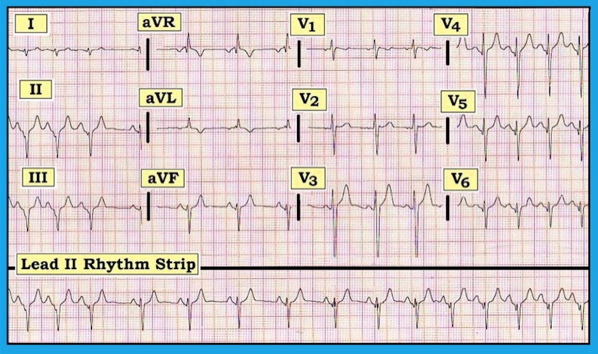
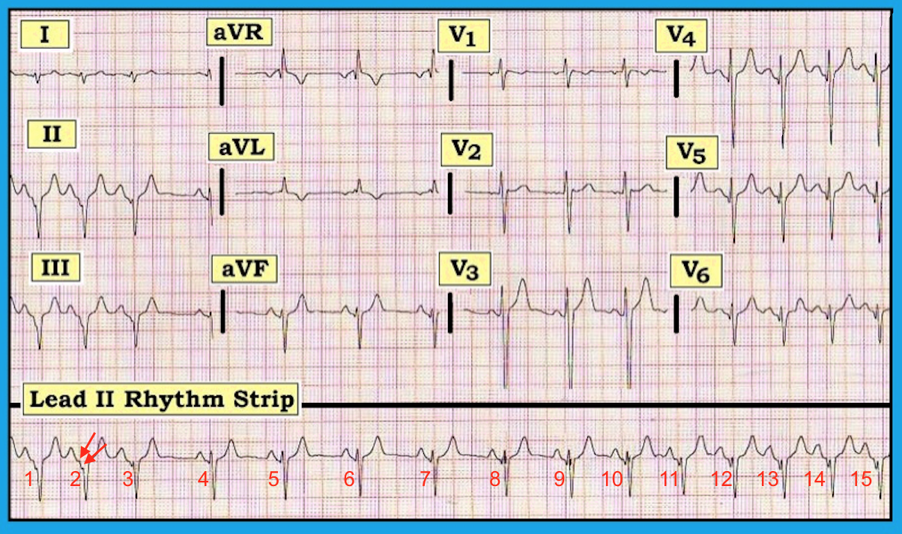
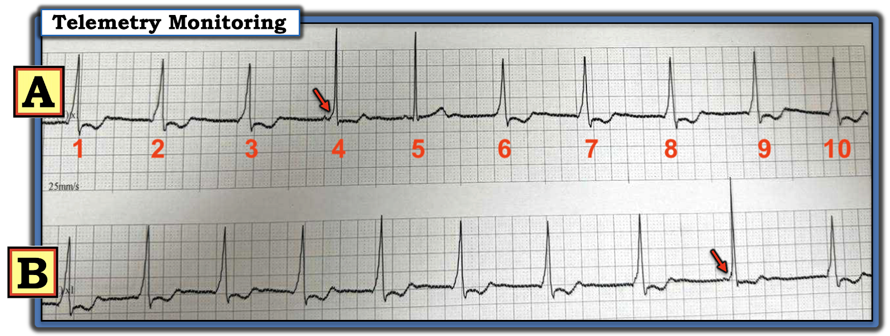

ECG Blog #121 — Hiệu ứng đàn xếp (concertina) ...
Điện tâm đồ trong Hình-1 được ghi ở một nam thanh niên 19 tuổi trước đó khỏe mạnh, có lẽ là một phần của đợt đánh giá kỹ lưỡng trước khi tập luyện gắng sức. Không có triệu chứng.
- Bạn sẽ diễn giải bản ghi này như thế nào?
- Với biểu hiện này — Những bệnh cảnh lâm sàng nào cần được xem xét trong chẩn đoán phân biệt của bạn? Bạn sẽ tiến hành đánh giá tiếp như thế nào?


-----------------------------------------------------------
Diễn giải: Điện tâm đồ này bất thường rõ rệt đối với một nam giới 19 tuổi. Dải nhịp DII dài ở phía dưới cho thấy một rối loạn nhịp theo pha, với sóng P dương và khoảng PR cố định đi trước mỗi phức bộ QRS. Nhiều khả năng đây là loạn nhịp xoang rõ rệt — dù khó loại trừ khả năng biên độ sóng P hơi giảm (có vẻ xảy ra khi tần số chậm hơn) có thể là do ổ tạo nhịp nhĩ lang thang (wandering atrial pacemaker). Dù là trường hợp nào — nhịp này cũng lành tính ở một nam giới 19 tuổi.
- Chính phần còn lại của điện tâm đồ mới là điều đáng quan tâm nhất. Tất cả các khoảng (PR, QRS và QT) có vẻ bình thường. Trục QRS trung bình không xác định (chủ yếu âm ở cả hai chuyển đạo I và aVF). Không có lớn buồng tim. Điều THỰC SỰ bất thường rõ rệt — là QRS âm ở các chuyển đạo thành dưới, và tăng tiến sóng R gần như đảo ngược ở các chuyển đạo trước ngực kèm sóng q nhỏ ở các chuyển đạo V4,V5,V6. Có sóng T đảo ngược ở chuyển đạo aVL, còn lại sóng T đều dương (dù hơi nhọn). ĐIỀU CỐT LÕI: Đây không phải là một điện tâm đồ “bình thường” đối với một người 19 tuổi vốn khỏe mạnh!
-----------------------------------------------------------
Tiếp theo là gì?
Việc phát hiện một điện tâm đồ 12 chuyển đạo rõ ràng bất thường ở người trẻ tuổi này cần gợi ra một số khả năng cần cân nhắc (tức là, bệnh tim bẩm sinh chưa được phát hiện trước đó; một dạng bệnh cơ tim nào đó; một đợt viêm cơ tim trước đây đã tự khỏi; v.v.). Bệnh nhân đã được làm siêu âm tim để tìm bệnh tim cấu trúc nền — nhưng kết quả siêu âm về cơ bản không có gì đáng chú ý.
- GỢI Ý: Hãy nhìn kỹ phần cuối của khoảng PR ở các chuyển đạo II và III. Phần cuối của đoạn PR có phẳng không?
BÌNH LUẬN: Phần cuối của đoạn PR ở các chuyển đạo II và III dốc xuống. Hội chẩn với bác sĩ tim mạch chuyên ngành điện sinh lý (EP) đã xác nhận nghi ngờ rằng điện tâm đồ này thể hiện một hình ảnh giả nhồi máu (Pseudo-Infarction Pattern) ở một bệnh nhân có WPW.
- Việc đánh giá điện tâm đồ trước khi tham gia thi đấu ở các vận động viên trẻ vốn khỏe mạnh có cả ưu và nhược điểm. Mục tiêu hiển nhiên của đánh giá này là phát hiện các bệnh tim tiềm ẩn có thể trở nên nguy hiểm nếu được phép gắng sức thể lực không giới hạn. Trong số các vấn đề của việc ghi điện tâm đồ thường quy trước khi tham gia thi đấu có: i) chi phí; ii) độ nhạy kém của biện pháp sàng lọc này (tức là, một “điện tâm đồ bình thường” có thể làm giảm nguy cơ, nhưng hoàn toàn không loại trừ mọi nguy cơ); và iii) khả năng cho kết quả dương tính giả (tức là, nhiều hình ảnh điện tâm đồ bất thường nhưng không có hậu quả gì có thể gặp ở người tập luyện thể thao). Dù vậy — mức độ bất thường của điện tâm đồ trong Hình 1 quá không điển hình đối với một người 19 tuổi vốn khỏe mạnh, nên rõ ràng cần tìm nguyên nhân.
- LƯU Ý: Tôi hoàn toàn thừa nhận rằng mình đã không nghĩ đến WPW khi lần đầu nhìn thấy bản ghi này. Sóng delta theo cách chúng ta thường hình dung — hoàn toàn không thấy được. Tuy nhiên, danh sách các nguyên nhân có thể gây ra hình ảnh điện tâm đồ bất thường này đã thu hẹp đáng kể khi siêu âm tim chất lượng cao không gợi ý bất kỳ dạng bệnh tim cấu trúc nền nào. Bài học cần rút ra — là tùy theo mức độ tiền kích thích tương đối và vị trí của đường phụ — hình ảnh WPW trên điện tâm đồ có thể đa dạng và kín đáo. Hình ảnh giả nhồi máu thành dưới thấy ở đây là do sóng delta âm ở các chuyển đạo II và III. Ngoài ra, sóng delta không dễ nhận ra trên bản ghi này.
-----------------------------------------------------------
T.B. (P.S.) — Xin HÃY XEM LẠI dải nhịp chuyển đạo II dài!
Những bình luận và câu hỏi xuất sắc của Nguyen Chi Tinh và Pham Le Tra (cả hai đều đến từ Việt Nam) trên EKG Club trực tuyến đã thôi thúc tôi xem xét kỹ hơn một lần nữa dải nhịp chuyển đạo II dài ở phía dưới Hình-1 (Xem Hình-2 bên dưới).
- Câu hỏi: Làm thế nào để chẩn đoán ổ tạo nhịp nhĩ lang thang (Wandering Atrial Pacemaker)? Có phải đó là điều chúng ta thấy trong dải nhịp chuyển đạo II dài ở đây không?
- Ngoài sự thay đổi kín đáo về hình dạng sóng P — Còn điều gì khác thay đổi khi ta đi dọc theo dải nhịp chuyển đạo II dài này không? (GỢI Ý: Hãy nhìn các mũi tên ĐỎ trong Hình-2 — và so sánh những gì bạn thấy với phức bộ P-QRST của các nhát #5 và 6).


-----------------------------------------------------------
TRẢ LỜI: Đôi khi — vị trí của ổ tạo nhịp nhĩ có thể dịch chuyển (lang thang) khỏi vị trí khởi phát thông thường ở nút SA (nút xoang nhĩ). Trong đa số trường hợp — Ổ tạo nhịp nhĩ lang thang là một biến thể bình thường lành tính, xảy ra ở bệnh nhân không có bệnh tim nền. Nó có thể do thay đổi trương lực phế vị (làm chậm sự phát xung của nút SA và cho phép các vị trí khác trong nhĩ tạm thời nổi lên) — hoặc có thể không có nguyên nhân rõ ràng. Để chẩn đoán — cần có ít nhất 3 hình dạng sóng P khác nhau (thể hiện sự dịch chuyển tới ít nhất 3 vị trí khác nhau trong nhĩ) — với sự thay đổi từ từ qua vài nhát (không đột ngột! ) từ hình dạng sóng P này sang hình dạng kế tiếp. Như bạn có thể hình dung — điều này đòi hỏi một thời gian theo dõi khá dài! — đây có lẽ là lý do chính khiến chúng ta rất thường không nhận ra ổ tạo nhịp lang thang khi nó có mặt (hầu hết các dải nhịp chỉ dài không quá một số ít giây …). Vì ổ tạo nhịp nhĩ lang thang thường có hệ quả lành tính — việc chúng ta không nhận ra nó ở những người không triệu chứng và vốn khỏe mạnh nói chung không có ý nghĩa lâm sàng. Do đó, ngay cả NẾU sự thay đổi hình dạng sóng P mà chúng ta thấy trong dải nhịp chuyển đạo II dài ở Hình-2 thực sự là do dịch chuyển từ ổ tạo nhịp nhĩ này sang ổ khác — thì về mặt kỹ thuật chúng ta cũng không thể chẩn đoán “ổ tạo nhịp lang thang” — vì chúng ta không thấy 3 hình dạng sóng P khác nhau.
- Đó không phải là điều đang xảy ra trong dải nhịp chuyển đạo II dài! Thay vào đó — 2 mũi tên ĐỎ trong Hình-2 thể hiện sự dốc xuống kín đáo-nhưng-có-thật của sóng delta âm, xuất hiện từng lúc với mức độ thay đổi ở chuyển đạo II!
- Các nhát #4,5 và 6 ở chuyển đạo II có vẻ được dẫn truyền bình thường. Bắt đầu từ các nhát #7 và 8, xuất hiện một sóng q nhỏ và hẹp. Qua vài nhát tiếp theo, sóng q này sâu hơn và rộng hơn — cuối cùng hình thành sự dốc xuống kín đáo về phía cuối sóng P ở vài nhát sau cùng của bản ghi. Hiệu ứng này trông giống với hình ảnh chỗ nối P-QRS được đánh dấu bằng các mũi tên ĐỎ ở đầu bản ghi. Dù những thay đổi kín đáo này dễ bị bỏ sót (lúc đầu tôi đã bỏ sót chúng! ) — chúng không thể nhầm lẫn ở người 19 tuổi này, người đã được thăm dò điện sinh lý (EP) chẩn đoán WPW, khi bạn so sánh dẫn truyền bình thường (các nhát #4,5,6) với hình ảnh P-QRS ở đầu và ở cuối bản ghi này.
- Như vậy, sau 3 nhát đầu tiên được dẫn truyền qua AP (đường phụ – Accessory Pathway) — chúng ta thấy vài nhát được dẫn truyền bình thường (các nhát #4,5,6) — rồi khoảng PR ngắn dần tiến triển kèm QRS rộng ra tương ứng khi sóng delta lại xuất hiện sau khoảng giữa dải nhịp chuyển đạo II dài này. Hình ảnh có tính chu kỳ này, với sự thay đổi từ từ về mức độ tiền kích thích tương đối mà chúng ta thấy ở bệnh nhân mới được chẩn đoán WPW này, được gọi là Hiệu ứng Đàn xếp (Concertina Effect).
- ĐIỂM THEN CHỐT (Vượt ra ngoài phần cốt lõi) — Một cách giúp phân biệt hiệu ứng đàn xếp ở bệnh nhân WPW với các PVC muộn trong chu kỳ (tức là, cuối tâm trương) — là với hiệu ứng đàn xếp, khoảng PJ (tức là, khoảng cách từ đầu sóng P đến cuối phức bộ QRS) không đổi. Với các PVC muộn trong chu kỳ thì khoảng này sẽ không cố định nếu khoảng ghép có thay đổi đôi chút.
- “Tin tốt” — là trong những trường hợp bạn thực sự thấy một hiệu ứng đàn xếp (hiệu ứng đàn xếp không phải là hiện tượng rất thường gặp ở bệnh nhân WPW) rõ ràng — thì đó là một chỉ điểm tốt đến bất ngờ cho thấy thời kỳ trơ của AP tương đối dài. Do đó, tần số quá nhanh trong các nhịp SVT liên quan đến AP ít có khả năng xảy ra hơn nhiều ở những bệnh nhân này (vì thời kỳ trơ dài hơn giới hạn số xung động có thể được dẫn truyền qua AP). Điều này báo hiệu nguy cơ tử vong đột ngột tương đối thấp hơn trong một cơn loạn nhịp nhanh liên quan đến WPW. Như vậy, việc nhận ra hiệu ứng đàn xếp ở người 19 tuổi mới được chẩn đoán WPW này ít nhất cũng cung cấp thông tin tiên lượng tích cực (tức là, nếu không triệt đốt AP ngay từ đầu — thì ít nhất nguy cơ tương đối của một cơn loạn nhịp nhanh liên quan đến WPW có thể gây tử vong cũng thấp hơn).
- LƯU Ý: Các chỉ điểm không xâm lấn khác cho thấy nguy cơ đột tử thấp hơn ở bệnh nhân WPW bao gồm: i) Tiền kích thích từng lúc (gián đoạn) trong nhịp xoang; và ii) Mất dẫn truyền qua AP đột ngột (tức là, mất sóng delta) khi gắng sức (điều này giải thích một trong những lợi ích của nghiệm pháp gắng sức ở bệnh nhân WPW trẻ tuổi).
-----------------------------------------------------------
-----------------------------------------------------------
Lời cảm ơn: Xin cảm ơn Massimo Bolognesi, MD (ở Cesena, Ý) đã cho phép tôi sử dụng bản ghi và ca lâm sàng này.
-----------------------------------------------------------
Đọc thêm:
- Để tìm hiểu thêm về Ổ tạo nhịp lang thang — Mời xem ECG Blog #65 (Cuộn trang xuống ngay phía trên Hình 2 để xem phần bàn luận về cách phân biệt giữa MAT, AFib, ổ tạo nhịp lang thang và nhiều PAC).
- Để tìm hiểu thêm về Hiệu ứng Đàn xếp — Mời xem bài viết ngắn của Singla V và cs.: BMJ Case Rep 2013 (doi:10.1136/bcr-2013-009328).
-----------------------------------------------------------
======================================
PHẦN BỔ SUNG (8/1/2025):
Xin cảm ơn Amelia Aria (đến từ Romania) — đã gửi cho tôi bản ghi theo dõi từ xa (telemetry) trong Hình-3, trong đó chúng ta thấy các mức độ tiền kích thích thay đổi (hiệu ứng đàn xếp (Concertina Effect)):
- Nhát #5 ở "A" được dẫn truyền bình thường — với sóng P xoang thấy rõ, không có sóng delta và thời gian QRS bình thường.
- Nhát #6 ở "A" cho thấy khoảng PR ngắn lại, kèm sóng delta (mũi tên ĐỎ). Một phức bộ tương tự khác thấy ở "B" (mũi tên ĐỎ ở B).
- Tất cả các nhát khác ở "A" và "B" trên dải theo dõi từ xa này đều được dẫn truyền với tiền kích thích hoàn toàn (sóng delta nổi bật — với sóng P bị "vùi" trong phần đầu của phức bộ QRS giãn rộng).

